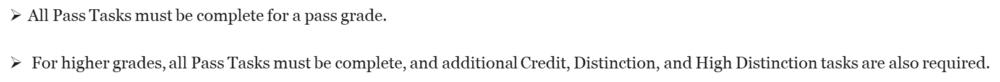

This is a portfolio based learning unit where you will have to submit a portfolio at the end.
The assessment task is related to the "Learning Portfolio", where
- You will work through a number of tasks throughout this unit and produce a range of artefacts including scripts, trained machine learning models, simulated network attack datasets, and a report on privacy protection in analytics.
- This work will be combined together with your own critique and understanding (unit portfolio) on your learning performance in your learning portfolio for assessment.
You can access the weekly tasks via the onTrack system. Look for the Unit SIT719.
https://ontrack.deakin.edu.au/
Tasks will consist of the following kinds of activities:
Students are required to submit tasks, collaborate with their tutor to resolve any issues identified, and discuss their understanding of the associated concepts by each task's indicated due date.
Task discussions must be conducted in an online practical class or via OnTrack discussions.
Tasks may be discussed with staff anytime within the submission period by the corresponding due dates.
It is strongly recommended that Tasks are submitted well ahead of these due dates, as completion of the tasks involve submitting work for assessment, responding to feedback, discussing the task with teaching staff, and ensuring work submitted demonstrates the required outcomes.
Portfolio tasks are 100%, marked and graded. Each task in the unit is associated with a grade: either Pass, Credit, Distinction, or High Distinction.

That means,
Students also need to submit a learning portfolio summary report based on the onTrack tasks at the end of the semester.
OnTrack is a web assessment tool that provides students with a task-oriented approach to portfolio assessment to stay aligned by completing tasks as part of their learning. Students will work through a series of tasks in order to achieve a target grade to complete their unit learning outcomes.
https://deakin.au.panopto.com/Panopto/Pages/Viewer.aspx?id=d39d9f7a-9460-417c-9eef-afe7012c1d55
https://www.deakin.edu.au/students/help/about-clouddeakin/assessment/ontrack#vmod28228341
Microsoft teams will be used to deliver lectures and online workshops. Please see the following demo to understand the use of Microsoft teams.